3.网站设计
内容板块及页面组织结构:
 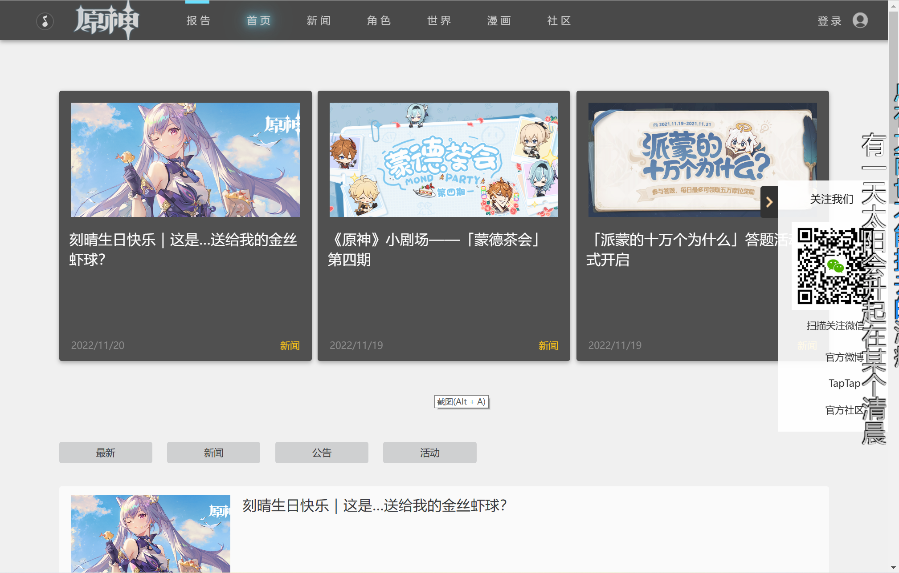
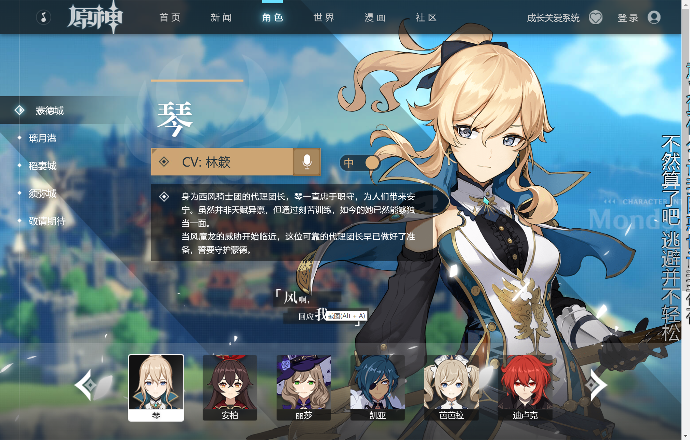
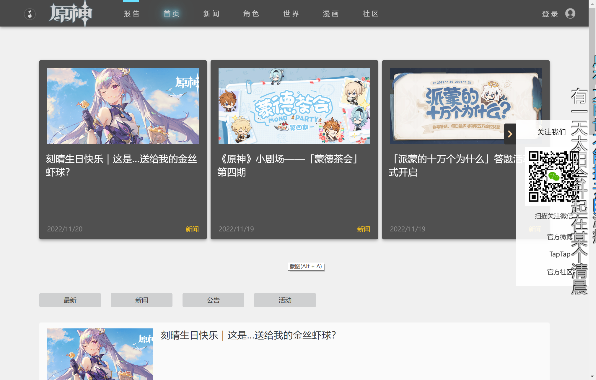
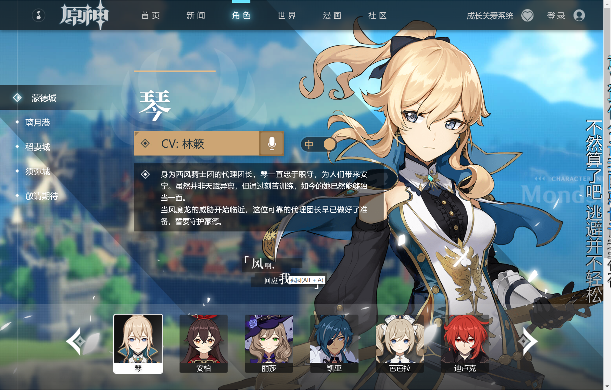
（开始一直以为是以word形式提交，最后一天时间只够内容的搬运了)
组员：王宇飞
学号：0223792
班级：软件2213
网页名称：原神官网
网页主题：对原神官网进行内容的基本复刻
选题动机：原神这款游戏比较感兴趣，想要模仿制作一个主页
内容板块及页面组织结构:
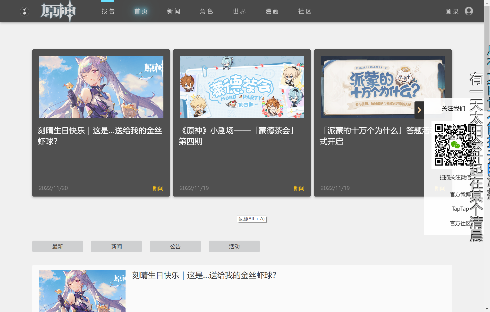
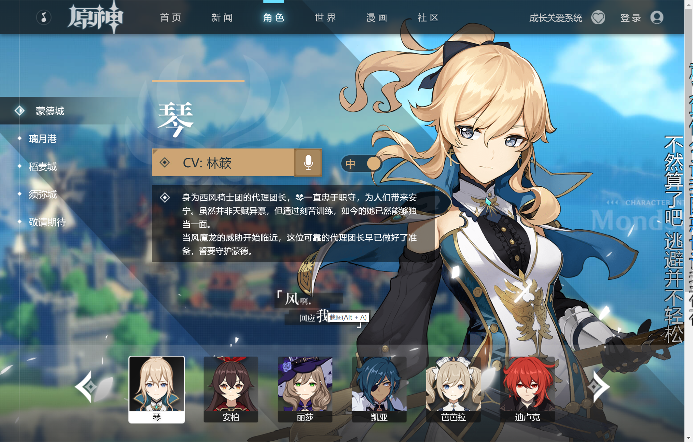
用到的主要技术：HTML，css，js，jQuery
主要使用工具：vscode
效果截图
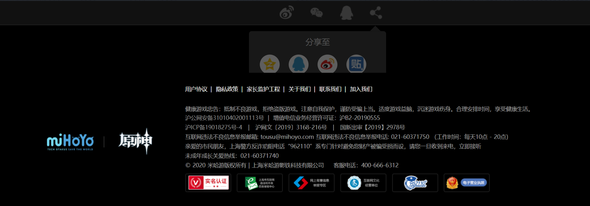
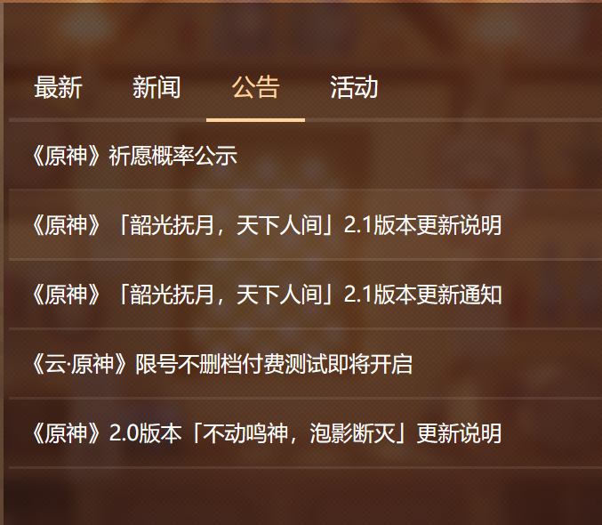
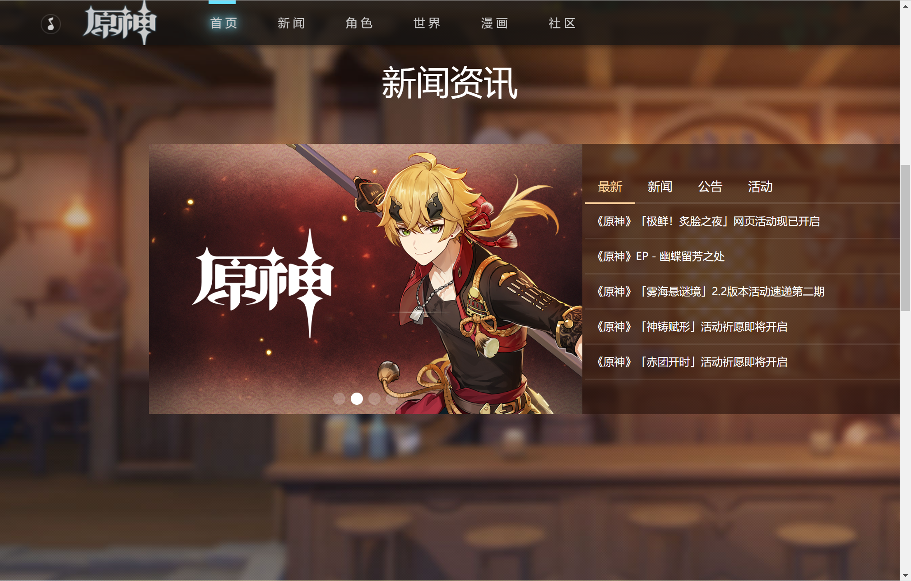
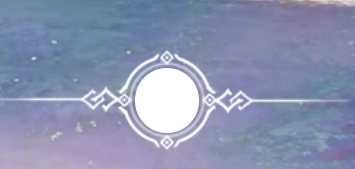
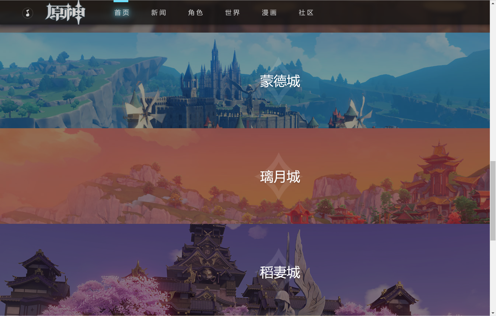
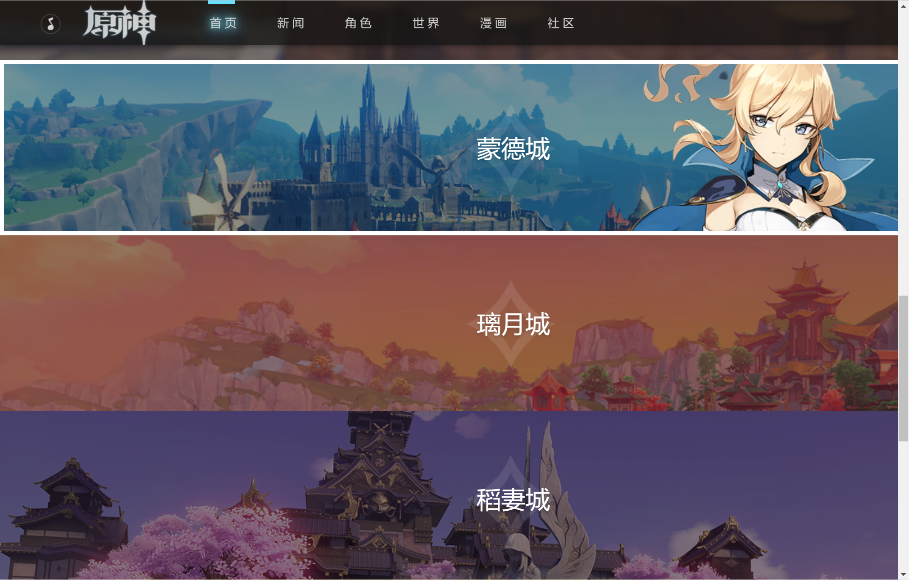
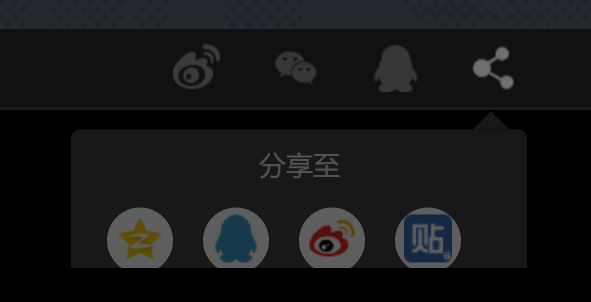
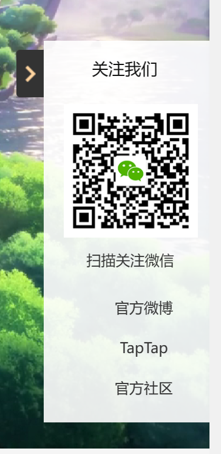
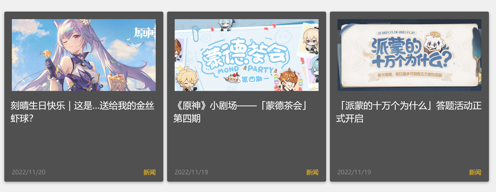
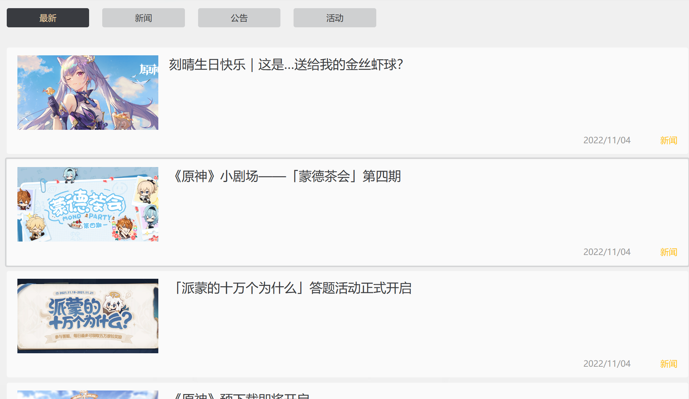
制作的主要步骤：
1.对原神官网的内容总体浏览，搜索对应的所需知识点
2.对主页进行制作，添加视屏播放背景音乐，相关图标登录按钮及界面，透明导航栏
3.对主页的新闻咨询进行编辑，包括轮播及页面更换的页面
4.对照情况制作三个地图并且移动上去有动效变化
5.制作页脚内容
6.制作新闻页面，同样移动上去会有动效变化
7.在下方制作了四个不同内容的页面
8.复制了页脚的制作
9.制作了右侧边栏
10.对角色页进行制作，选取部分角色
11......
制作过程所遇到的问题：（包括失败删除的部分）
1.在制作PV视频按钮时总是失灵，不知道原因
2.登录页面点击总是进不去但是确实制作了这个代码
3.涉及了很多上课没有的知识点，总是需要边学习边查询边制作，但是总体效果基本一致
4.开始因为用的不熟练，总是写错代码，所以这个由我一个人完成的大作业耗时半个多月
亮点：1.在导航栏制作了自动移动回主页的光标，但由于晚上临时写的报告没有改回来
2.新闻咨询有4个轮播画面，右边也放了很多内容
3.右边制作可收回的固定侧边栏
4.底部三个移动会改变图像的动效变化
5.除了特殊的动效变化，很多图像都用了普通的动效移动变化
自我评价与总结：在这次大作业的制作周期非常长，主要是大部分的时间进行了知识性的学习，特别是关于js，jQuery内容的相关的，因为在 课程中的涉及较少，大部分内容要从开始学习，整个作业的完成将近用了半个月的时间。在这次大作业的完成过程中我对自己还是比较满意的 在制作的过程中学习到了许多新的知识，也加深对前端开发的兴趣，最后能完成官网的基本复刻也非常有成就感。
展望：不知道接下来的学期有没有相关内容的学习，我也希望可以能在此方向加深学习